Razas
Razas que viven en el continente de Primus
Las Razas de Primus
Humano
Ver másElfos
Ver más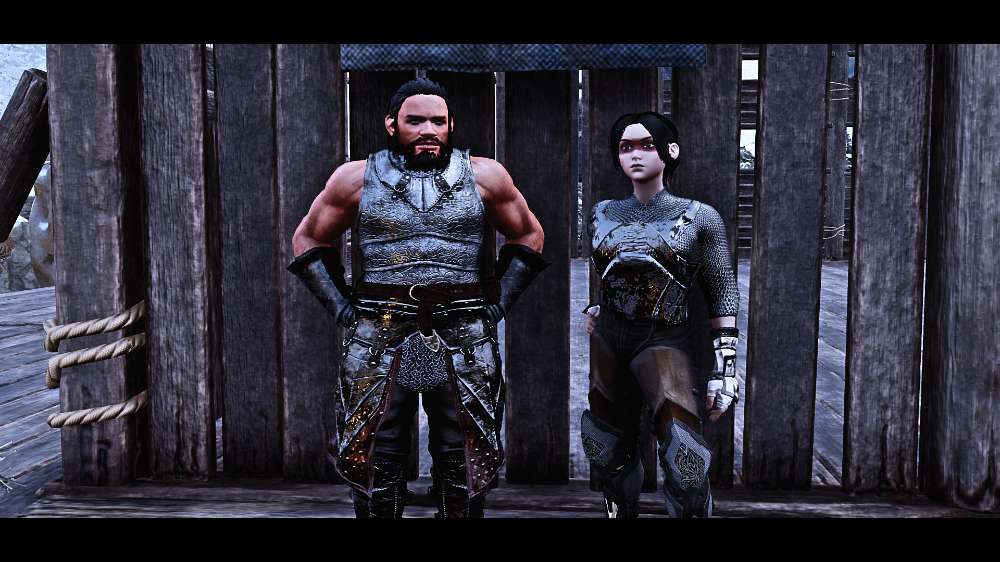
Enano
Ver másShazari
Ver más
Ossalyth
Ver más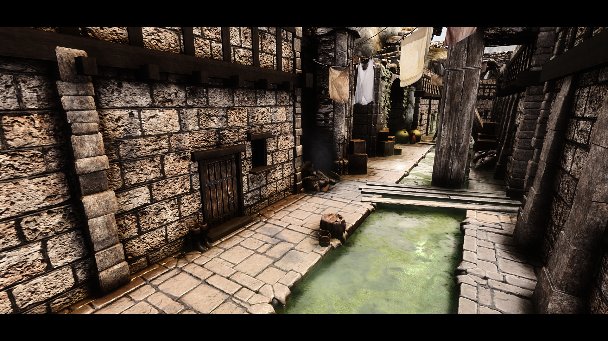
Malvakari
Ver más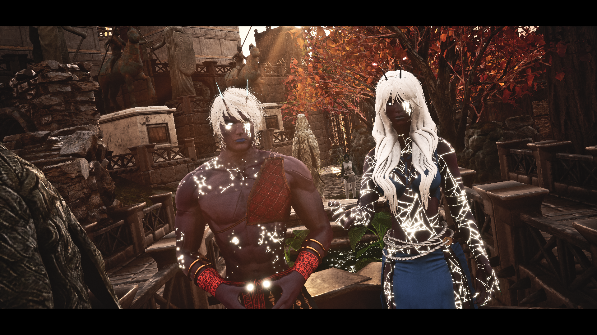
Thae'tirs
Ver más
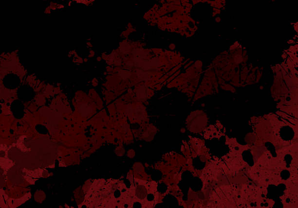
En un continente marcado por las guerras, las traiciones y la magia oscura, las cicatrices del pasado moldean el presente. Únete a nuestro servidor de roleplay ambientado en el universo de Conan Exiles y forja tu propio destino entre reinos, razas y secretos olvidados.
Cada decisión tiene consecuencias. Cada acción deja una marca. ¿Cuál será tu legado en el continente de Primus?
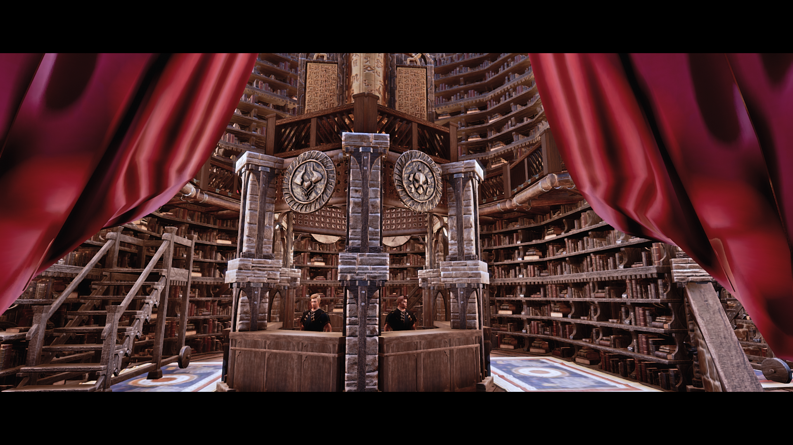
Descubre la historia de Primus: cinco eras de guerras, traiciones y alianzas que moldearon el continente. Conoce sus deidades, sus cicatrices y los secretos que aún aguardan en la oscuridad.
Explorar →Humanos, Elfos, Shazari, Ossalyth, Enanos y más. Cada linaje carga con su historia, sus ventajas y sus sombras. Elige la raza que definirá tu lugar en el mundo de Primus.
Explorar →Once caminos esperan ser tomados. Desde el Guerrero hasta el Ladrón, cada oficio define tus habilidades, tu rol en el campo de batalla y tu lugar en la sociedad de Primus.
Explorar →Las reglas que sostienen el orden en Primus. Combate, economía, construcción y convivencia. Comprende el código antes de actuar — en este mundo, la ignorancia no es excusa.
Explorar →El continente de Primus
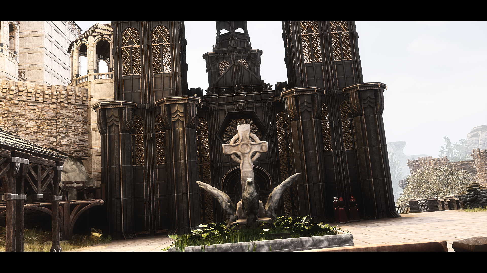
El continente de Primus es una tierra ancient forjada en conflictos interminables. Sus terrenos vastos albergan civilizaciones olvidadas, ruinas de guerras pasadas y una geografía que refleja las cicatrices del tiempo.
Ver másLos dioses de Primus son entidades antiguas cuya influencia permea cada aspecto de la vida. Sus cultos, templos y misterios siguen dando forma a los destinos de mortales e inmortales por igual.
Leer másRazas que viven en el continente de Primus



Los oficios del continente de Primus
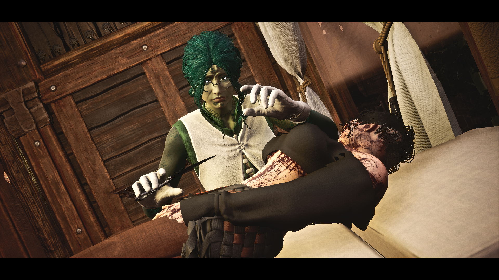
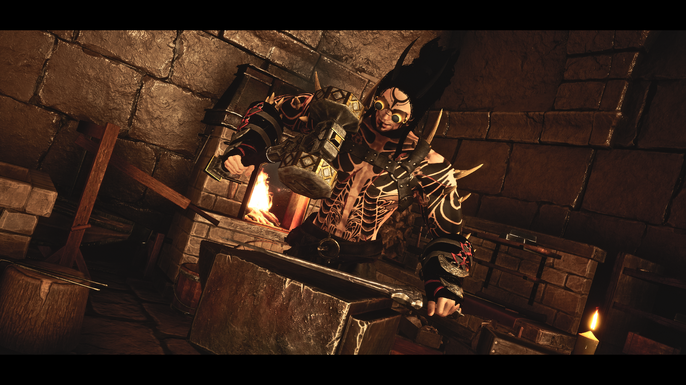
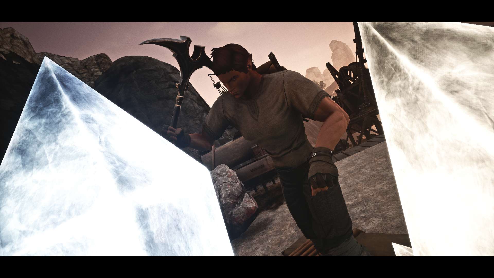
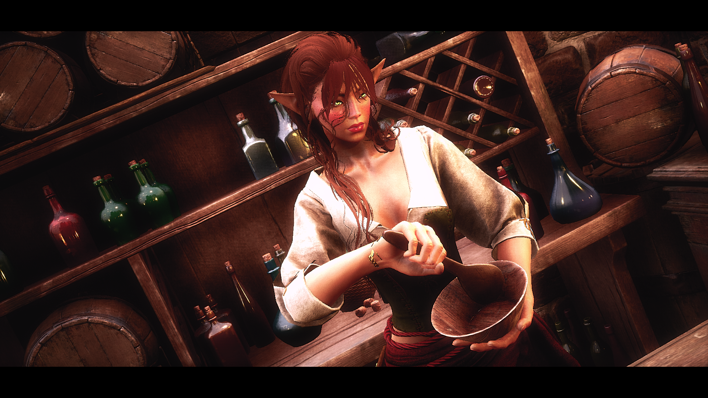

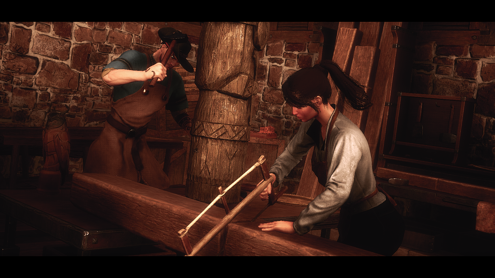
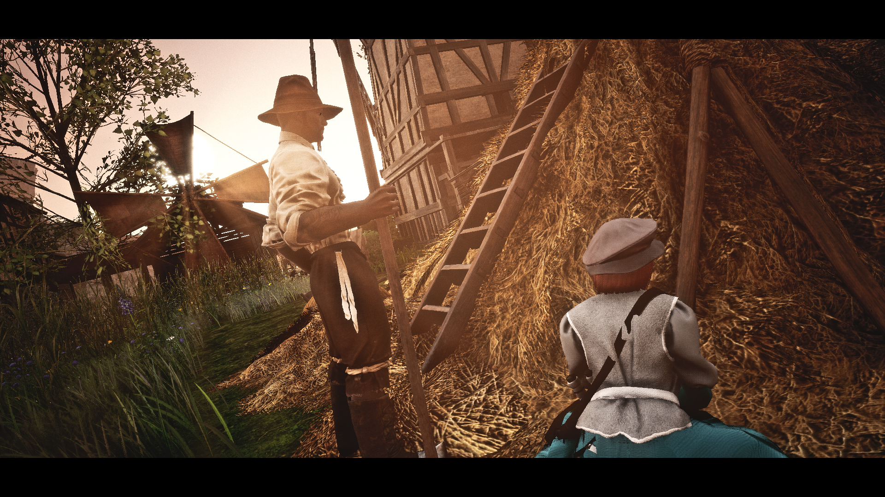
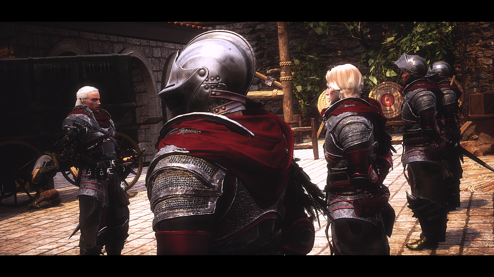
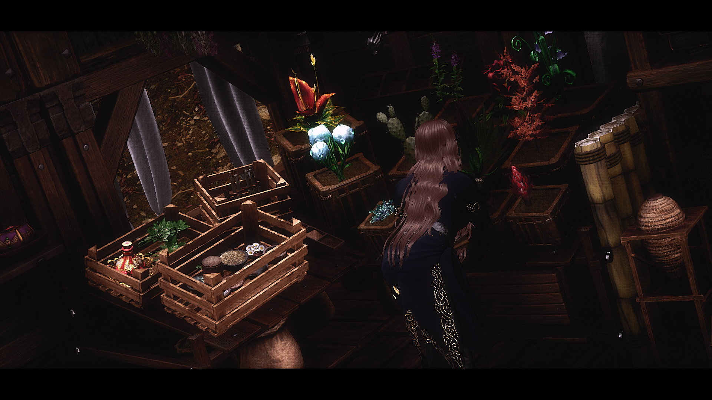
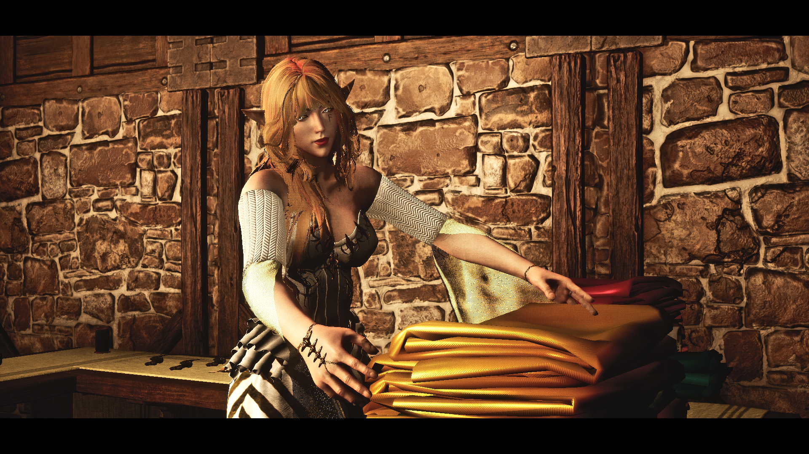
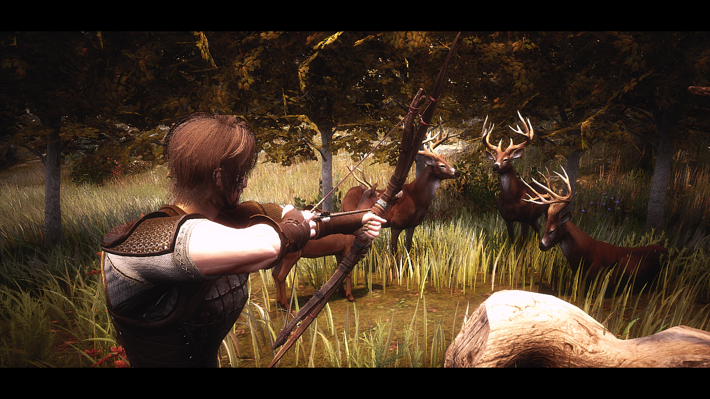
Reglas del servidor
En caso de incumplir alguna de estas normas, se le aplicará las sanciones debidas según lo hecho.
"El desconocimiento de la normativa no exime de su cumplimiento. Siempre debes ser consciente de lo que hacéis, recordad que estáis en un servidor de rol y todo lo que hagas tendrá una consecuencia, por lo que debéis usar el sentido común."
Los Gremios de Primus
"Un grupo desordenado sobrevive una vez. Una formación entrenada vuelve a casa como una leyenda."
Bienvenido al nuevo Gremio de Aventuras, un espacio pensado para quienes buscan participar, disfrutar y vivir historias épicas sin depender de horarios rígidos ni largas esperas.
Tras escuchar propuestas e inquietudes de la comunidad, hemos trabajado en un sistema más dinámico y accesible, donde pequeños grupos de aventureros podrán adentrarse en las peligrosas tierras de Primus, superar misiones, crecer en poder y desarrollar la historia de sus personajes con total libertad creativa.
Cada expedición será una oportunidad para colaborar, improvisar, combatir y dejar huella. No importa si dispones de mucho o poco tiempo: la idea es que todos puedan formar parte de la experiencia y avanzar a su ritmo.
Para explicar el funcionamiento completo del sistema, normas, mecánicas y detalles importantes, hemos preparado una guía en Notion que encontrarás justo debajo.
Consulta toda la información en el siguiente enlace y prepárate para comenzar la aventura.
Las Clases del continente de Primus


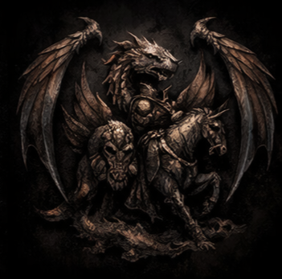
El Ciudadano no es solo un campesino, un recolector o un simple trabajador. En Primus, el plebeyo representa el corazón de la sociedad. Es quien forja las espadas, cultiva las tierras, cura las enfermedades, y mantiene en pie los cimientos del mundo conocido. Mientras casas nobles juegan a la política y soldados alzan armas, el ciudadano comun crea, construye y sobrevive.

Aunque históricamente relegados a las clases bajas, los Ciudadano que sobrevivieron a las guerras y los reinos fracturados adquirieron una sabiduría práctica invaluable. En la Quinta Era, muchos formaron gremios y aprendieron a negociar su trabajo como un recurso esencial.
El Ciudadano ha vivido la vida sin grandes lujos o con muchos lujos depende de su posicion social, pero con una fuerte conexión con la realidad del mundo normalmente. Sabe que todo lo que sube puede caer, y que sin sus manos, ningún imperio puede sostenerse. Algunos Ciudadanos son idealistas, otros más cínicos; pero todos comparten una cosa: conocimiento del valor del esfuerzo y la repetición.

Donde una casa noble piensa en estrategia, el Ciudadano común ve el estado de la cosecha. Donde un Magharyn habla del equilibrio del Thae, el ciudadano aplicado en salud conoce qué planta puede sanar o envenenar en segundos..
Los Ciudadanos Suelen Optar en un punto de su vida a un camino distinto..
Optando por estudiar artes en combate o , seguir haciéndose en negocios !

No fueron creados por capricho, ni por necesidad inmediata.
Los Vhark’hul nacen de una obsesión.
Fue Erick quien, en su búsqueda por trascender los límites del Thae conocido, comenzó a experimentar con una combinación que muchos consideraban imposible… o prohibida: el Thae del Poder y el Thae de la Muerte. No se trataba de dominar ambos, sino de fundirlos, de crear una fuerza que no solo destruyera, sino que perdurara más allá del final.
El resultado no fue una criatura, sino un propósito encarnado.
Los Vhark’hul no nacen: son forjados.
Cada uno es el producto de rituales donde la vida es moldeada, quebrada y reconstruida bajo una voluntad superior. No poseen la inestabilidad de los Magharyn ni la dependencia de los Nigromantes. Son algo distinto. Algo más… definitivo..

Sus armas no son simples herramientas de guerra.
Las hojas que empuñan están ligadas a su esencia, y con cada enemigo caído, reclaman algo más que la victoria: recolectan su alma. No como trofeo, sino como combustible. Cada alma absorbida fortalece su existencia, refuerza su vínculo con el Thae y los acerca más a aquello que Erick buscaba crear… una entidad autosostenida, imposible de extinguir por medios convencionales.
Por ello, muchos los llaman desalmados.
No por carecer de alma, sino porque han trascendido la necesidad de una propia. Sus emociones son ecos lejanos, su humanidad una sombra que apenas recuerdan. Se mueven con precisión, con frialdad, como si cada acción estuviera ya decidida desde antes de ejecutarse.
Otros los llaman guardianes.

En lo alto de la Torre del Último Juramento, los Vhark’hul permanecen. No como vigilantes pasivos, sino como centinelas de algo que pocos comprenden. Allí donde los votos no pueden romperse, donde las promesas tienen peso real, ellos existen como recordatorio viviente de que algunos compromisos… no admiten traición.
Responden al reino.
No responden a órdenes comunes.
Y no luchan por gloria.
Cada Vhark’hul sigue un propósito propio, grabado en su ser durante su creación. Un objetivo que puede tomar años, décadas… o siglos en cumplirse.
Y cuando finalmente lo logran, no celebran.
Solo continúan.
Tras la caída de Raventree Hall y los años del Aislamiento Luminar, la antigua orden de los Thrones fue reformada. De aquella fuerza indivisible nacieron dos caminos distintos, pero complementarios. Así surgieron los Praetor: la manifestación más pura del brazo militar de Thronus.
Si en otros tiempos fueron llamados custodios de la fe, hoy son algo más preciso y necesario: el muro que sostiene el mundo cuando la oscuridad presiona sus cimientos.
No fueron creados para gobernar ni instruir. No fueron llamados para debatir doctrina. Fueron consagrados para resistir.
Allí donde la Llama Eterna es desafiada, el Praetor avanza.
La fuerza de los Praetor no reside únicamente en su armadura ni en el filo de sus armas, sino en la convicción que los sostiene. Viven bajo los Preceptos con disciplina absoluta, respirando la doctrina como si fuese aire. Para ellos, la fe no es consuelo ni refugio: es ley irrevocable.
Tras la caída de Raventree Hall y los años del Aislamiento Luminar, la antigua orden de los Thrones fue reformada. De aquella fuerza indivisible nacieron dos caminos distintos, pero complementarios. Así surgieron los Praetor: la manifestación más pura del brazo militar de Thronus.
Si en otros tiempos fueron llamados custodios de la fe, hoy son algo más preciso y necesario: el muro que sostiene el mundo cuando la oscuridad presiona sus cimientos.
No fueron creados para gobernar ni instruir. No fueron llamados para debatir doctrina. Fueron consagrados para resistir.
Allí donde la Llama Eterna es desafiada, el Praetor avanza.
La fuerza de los Praetor no reside únicamente en su armadura ni en el filo de sus armas, sino en la convicción que los sostiene. Viven bajo los Preceptos con disciplina absoluta, respirando la doctrina como si fuese aire. Para ellos, la fe no es consuelo ni refugio: es ley irrevocable.

No buscan la guerra, pero tampoco la evitan cuando la herejía rehúsa inclinarse. Cuando la sombra se niega a extinguirse y la corrupción rechaza redención, entonces la espada habla y la llama consume. No por odio, ni por placer, sino por mandato del Orden. Dentro de la Lucis Aeternae, los Praetor conforman la primera línea de toda cruzada. Son la cabeza visible de la rama militar, ejemplo para todo aquellos que les siguen y piedra angular de la estrategia bélica de la Orden. Su disciplina refleja el orden celestial que veneran: jerarquía clara, responsabilidad absoluta y obediencia incuestionable al Lux Belator y al Primus Luxor.
No son conquistadores.
No son fanáticos sin dirección.
Son la muralla viva de Thronus.
Y mientras arda la Llama Eterna, un Praetor permanecerá en pie.
[Foto 3 ]
Debajo del Dualhar
ROL: DPS DISTANCIA/DPS FISICO
Los Dualhar no son un mito… pero tampoco son una presencia común.
Su existencia es conocida en distintos rincones del mundo, mencionados en relatos de viajeros, informes militares y susurros en las cortes. No se ocultan como un secreto prohibido, pero tampoco se muestran abiertamente. Se sabe que existen, que operan… y que es mejor no interferir con sus asuntos.
Su origen se vincula a unas antiguas ruinas al este de la capital de Azimra, lugar que muchos reconocen como su base o refugio principal. Aunque no es un territorio declarado, pocos dudan que quienes se acercan demasiado sin invitación están siendo observados mucho antes de darse cuenta.
[foto 1]
Los Dualhar están presentes en ciudades, caminos y territorios clave.
No dominan… pero vigilan.
Actúan como espías, exploradores y ejecutores cuando es necesario. Su capacidad para moverse sin ser detectados los convierte en una fuerza difícil de rastrear, pero no invisible. Algunos han visto sus marcas, otros han sobrevivido a sus intervenciones, y unos pocos incluso han logrado negociar con ellos.
[foto 2]
En combate, su eficiencia es incuestionable.
Son expertos arqueros, capaces de abatir objetivos a distancia con precisión implacable, y espadachines que dominan enfrentamientos rápidos y decisivos. No prolongan las batallas: las resuelven.
El sigilo es su lenguaje, pero no su única herramienta.
Saben cuándo observar… y cuándo actuar.
Para algunos reinos, los Dualhar son aliados incómodos.
Para otros, una amenaza latente.
Pero para todos, representan una certeza:
No están ocultos…
solo eligen cuándo ser vistos.
[foto 3]
Tras la disolución de los antiguos Thrones y la reforma de la orden luego de los acontecimientos de Raventree Hall, no toda la fuerza de la iglesia tomó la armadura ni el escudo. De la misma raíz nació una segunda vocación. Así surgieron los Luminarii: aquellos destinados no a resistir el embate, sino a revelar la verdad que lo precede. Si los Praetor son el muro que contiene la oscuridad, los Luminarii son la luz que la descubre. No marchan primero para destruir; marchan para revelar.
Dentro de la Lucis Aeternae, los Luminarii encarnan la dimensión doctrinal y espiritual del mandato de Thronus. Son custodios de la palabra, guardianes del dogma y vigilantes de la pureza interna de la fe. Viven consagrados al estudio de los Preceptos, examinando cada verso, preservando cada enseñanza como si se tratase de una chispa desprendida de la Llama Eterna. Para ellos, la fe no solo se defiende. Se comprende; se examina y se prueba.

Su labor no siempre es visible en los campos de batalla, pero sin ella ninguna cruzada sería justa. La corrupción rara vez se manifiesta con estruendo; se infiltra en susurros, se disfraza de duda, se oculta en medias verdades. Los Luminarii escuchan esos susurros. Observan donde otros apartan la mirada. Investigan lo que muchos prefieren ignorar. Son eruditos y jueces. Curiosos y severos. Compasivos, pero nunca ingenuos. Cuando descubren la sombra, no la enfrentan con furia ciega, sino con revelación. Obligan a lo impuro a exponerse bajo la claridad de la Lucis Aeterna, pues entienden que nada corrupto puede resistir una luz que arde sin titubeos.
Mas su deber no termina en el juicio. Allí donde la guerra deja cicatrices y el miedo amenaza con quebrar la esperanza, los Luminarii restauran lo que puede ser salvado. Curan la carne herida, fortalecen el espíritu debilitado y purifican aquello que aún no ha sido consumido por completo. Saben que la fe no solo se impone mediante la espada: también se sostiene mediante la guía y el entendimiento.

Dentro de la jerarquía de la Orden, los Luminarii representan el equilibrio del fuego sagrado. Si los Praetor ejecutan el mandato visible, ellos garantizan que dicho mandato permanezca alineado con la verdad doctrinal. Responden al Lux Purificare y al Primus Luxor con la misma obediencia que sus hermanos armados, pero su campo de batalla es el pensamiento, la herejía latente y la corrupción encubierta.
No buscan protagonismo; Buscan claridad. No desean condenar por impulso; desean purificar con precisión.
No son meros inquisidores ni simples sanadores; son el Ojo de la Llama Eterna.
Y mientras exista una sombra en Primus, un Luminarii estará observando.

ROL: HEALER/BUFFER
Adentrarse en sus dominios ya no es solo cruzar el umbral de un bosque antiguo. Es internarse en una tierra que recuerda. Una tierra que fue herida… y que no ha olvidado.
Durante eras, la Naturaleza en Primus fue paciente. Toleró el hierro, el fuego y la ambición de las civilizaciones. Susurró advertencias en hojas agitadas y raíces que crujían bajo pasos imprudentes. Los Custos Saltus escuchaban esos susurros y respondían con equilibrio, actuando como puentes entre el mundo físico y los ecos espirituales del cambio eterno representado por Zhenra.
Pero en las tierras del Este, la arboleda de Narthilnor cayó; El corazón verde desapareció… Y con ello, algo más despertó.
En el vacío dejado por su madre espiritual, los antiguos guardianes comprendieron una verdad que siempre había estado latente: la naturaleza no es solo equilibrio. También es instinto. Es tormenta. Es supervivencia.

Así nacieron los Noc’thar.
No como una orden fundada.
No como una tradición transmitida.
Sino como la venganza de la propia naturaleza.
Si los Custos fueron Guardianes del Cambio y el Equilibrio, los Noc’thar son guardianes de la Respuesta y la Reparación. No buscan dominar la naturaleza, pero tampoco limitarla a la paciencia eterna. Han aceptado que cuando la corrupción desgarra el mundo, el bosque no susurra: ruge.
Su vínculo espiritual no fue destruido con la caída de Narthilnor; fue transformado. Allí donde antes encontraban guía en la serenidad perpetua, ahora han aprendido a canalizar también la fuerza primordial del caos, representada en la figura de Vorgrimm, no como amo, sino como herramienta. Entienden que la vida no florece sin violencia natural: el incendio limpia, la helada endurece, y la tormenta purifica

Algunos entre ellos aún sanan tierras heridas, pero sus manos ya no son solo suaves. Otros marchan como guerreros inclementes, arrancando la corrupción desde la raíz antes de que pueda extenderse. No actúan desde la compasión ingenua, sino desde una justicia antigua que precede a reyes y credos.
Habitan ahora los lugares donde el bosque es más áspero, donde el viento corta y la nieve cubre cicatrices que aún laten bajo el suelo. Allí, los Noc’thar velan por el mundo no como mediadores pasivos, sino como su ultimátum viviente.
No han abandonado su misión.
La han endurecido.
No son meros druidas heridos.
Son la herida que aprendió a caminar.
Y cuando la tierra vuelva a gritar, no responderán con un susurro.
Responderán con un rugido..

ROL: DEBUFFER/HEALER
Allí donde las cumbres desgarran el cielo y el viento azota como un juicio antiguo, los Stormheilm no esperan. El norte no es herencia. No es derecho. Es conquista constante.
Hubo un tiempo en que fueron guerreros ritualistas dedicados a la resistencia, templados por la supervivencia extrema y el vínculo espiritual con la montaña. Enfrentaban pruebas imposibles y renacían de ellas con la fuerza de la piedra y el trueno en las venas. Buscaban equilibrio con los elementos, honrando la montaña que nunca se inclina. Pero el norte fue manchado por la traición, y la ambición. Por ello, alianzas se quebraron, y la montaña respondió. No dialogó, ni tampoco dudó. Sino que dejó al trueno proclamar su voluntad.
Desde aquella purga, los Stormheilm ya no se definen únicamente por resistencia, sino por determinación absoluta. Son la manada que no retrocede. No portan estandartes pulcros ni proclaman juramentos de corte caballeresco. Son el rugido de la montaña cuando esta decide expulsar el peso muerto que la debilita. Cada Stormheilm sigue siendo un renacido, marcado por ritos que separan al mortal del digno. Pero ahora esas pruebas no solo fortalecen el cuerpo y el espíritu: seleccionan. El débil cae. El desleal se quiebra. El que permanece se convierte en relámpago encarnado.

No conocen la retirada.
No conocen el temor.
La única dirección que aceptan es hacia adelante.
La purga de Ravensvik redujo su número, pero templó su esencia. Comprendieron que el enemigo no siempre se alza más allá del horizonte helado; a veces se oculta en la ambición interna, en el orgullo sin honor. Desde entonces, la manada es más pequeña, más unida y más letal.
Su vínculo con los elementos también se transformó. La piedra, el hielo y el trueno ya no son solo maestros: son armas vivientes en sus manos. Y en la tormenta reconocen el eco de Vorgrimm, no como divinidad distante, sino como principio de prueba y selección. Para ellos, el caos no es destrucción sin sentido; es supervivencia. Es el derecho del fuerte a mantenerse en pie cuando todo lo demás cae.

Luchan por dominio del norte. Por legado, y por la manada.
Defenderán Yrsafell hasta que el hielo reclame sus huesos y el trueno pronuncie su nombre por última vez. Porque si la montaña no retrocede ante la tormenta, tampoco lo harán sus hijos.
No son meros bárbaros.
No son simples exploradores del norte.
Son la tormenta que avanza.
Y cuando el viento aúlle en las cumbres, no será advertencia.
Será un anuncio.

ROL:LUCHADOR/TANQUE
Antes de ser vistos… ya han pasado.
Los Velum Caedis no luchan. No en el sentido que los vivos entienden. Ellos se desplazan entre instantes, guiados por una música que nadie más puede oír. Un susurro constante que marca el ritmo de su existencia.
Cada movimiento es una respuesta.
Cada paso, una sentencia.
No dominan a los muertos. No los esclavizan. Caminan junto a ellos… o quizás son arrastrados por ellos. Voces sin descanso murmuran en su mente, señalando objetivos, exigiendo actos, reclamando finales.
[foto 1]
Algunos obedecen por deber.
Otros, por culpa.
Y algunos… porque han olvidado cómo dejar de escuchar.
En combate, son irreales. Apariciones fugaces que cortan el tejido de la realidad y desaparecen antes de que la sangre toque el suelo. No buscan destrucción. Buscan precisión.
Un nombre.
Un acto.
Un final.
Y luego, nada.
Pero el precio es inevitable.
Cuanto más tiempo permanecen entre el mundo de los vivos y el eco de los muertos, más difusa se vuelve su existencia. Sus cuerpos siguen moviéndose… pero algo en ellos ya no regresa.
Y llega un momento en que el susurro deja de guiar.
Y empieza a reclamar.
[foto 2]
ROL: BURST DPS
Donde otros retroceden ante el silencio de la muerte, los Azharn avanzan. No lo desafían… lo aceptan. En ese vacío donde todo termina, ellos encuentran propósito.
Son seres marcados por un destino irrevocable, ligados a lo invisible, a lo olvidado, a aquello que se niega a desaparecer. No escuchan a los muertos como un don, sino como una condena que late en su sangre. Susurros sin descanso, voces que no conocen reposo. A través del viento y la música, los ecos de los caídos se aferran a ellos, guiando sus pasos… o arrastrándolos.
Nunca están solos.
El aire a su alrededor vibra con presencias: melodías que nacen de recuerdos marchitos, lamentos que desgarran la cordura, armonías que no pertenecen al mundo de los vivos. Para un Azharn, la música no es arte. Es un umbral. Un lenguaje antiguo con el más allá.
Son los intérpretes de lo inconcluso. Ejecutores de voluntades que la muerte no logró apagar. Sanadores de penas que jamás encontraron descanso. Vengadores de agravios enterrados en el olvido… o marionetas de voces que susurran mentiras con la forma de promesas.
El origen de su poder es un secreto que ni siquiera ellos comprenden del todo. Su sangre no los corrompe… los transforma. Los convierte en entidades suspendidas entre dos mundos, capaces de mirar donde otros enloquecerían al instante.
Pero ningún mortal puede sostener esa mirada eternamente.
A veces, el umbral devuelve la mirada.
Y cuando eso ocurre, no todos logran resistir.
Los Azharn no buscan gloria. La gloria es para los vivos. Lo suyo es algo más antiguo, más frío. Su existencia es un equilibrio imposible, una danza al filo de lo inevitable. Donde otros apartan la vista del final, ellos lo contemplan… y responden.
Cuando el silencio se alza para devorarlo todo, los Azharn no huyen.
Ellos cantan.
Ellos danzan.
Y el mundo se rompe con ellos.

Velum Cantoris — La Voz que Descompone el Mundo
No toda música está destinada a ser escuchada.
Los Velum Cantoris no se limitan a cantar… serían más soportables si así fuera. Son canales, conductos a través de los cuales lo que yace más allá encuentra forma y sonido. Sus voces son solo el inicio.
Instrumentos antiguos cuelgan de sus manos o reposan a su alrededor: cuerdas que vibran sin ser tocadas, tambores que laten como corazones olvidados, flautas que exhalan alientos que no pertenecen a ningún pulmón vivo. A veces son ellos quienes interpretan.
A veces… no.
Hay momentos en los que sus manos se detienen…
y la música continúa.
Los muertos tocan a través de ellos.
O en lugar de ellos.

Donde su arte resuena, la realidad se agrieta. Las certezas se pudren. La voluntad se deshace como ceniza entre los dedos. No invocan el Thae de Muerte y Caos… porque ya habita en cada nota, en cada vibración que se arrastra entre mundos.
Cada sonido arrastra un eco antiguo. Cada pausa es una grieta por donde algo observa de vuelta.
Algunos creen que provocan la desesperación.
Se equivocan.
La desesperación siempre estuvo ahí.
Ellos solo le dan forma.
Le dan voz.
Le dan ritmo.
Y cuando la última nota muere… la música no desaparece. Permanece, aferrada a la mente, repitiéndose en silencio, erosionando lentamente lo que encuentra.
Nadie que haya presenciado a un Velum Cantoris vuelve intacto.
Porque no importa quién tocó realmente…
la canción siempre encuentra a quien escucharla.

ROL: BUFFER/DEBUFFER
No todos los que estudian la muerte lo hacen desde las sombras.
Algunos fueron autorizados a mirarla de frente… y a utilizarla.
Los Zereth’mor no surgieron como una orden clandestina ni como un culto prohibido. Su existencia fue legitimada en un momento donde el mundo necesitaba respuestas que la vida no podía ofrecer. Fue Meiga, en un acto que muchos consideraron impensable, quien presentó la nigromancia no como una aberración, sino como una herramienta. Y contra todo pronóstico, tanto el rey como Caelis concedieron su aprobación.
No por confianza.
Sino por necesidad.
Desde entonces, los Zereth’mor caminan una línea peligrosa: son practicantes de un arte prohibido… permitido bajo vigilancia. Enseñan a quienes pueden soportarlo, formando discípulos capaces de manipular lo que otros temen incluso nombrar.
Para ellos, los muertos no son sagrados.
Son útiles.
No ven almas en descanso ni cuerpos dignos de duelo. Ven estructuras vacías, listas para ser reclamadas. En sus manos, los caídos se convierten en marionetas, obedientes, silenciosas, eternamente funcionales. Cada cadáver reanimado es un hilo más en una red invisible que solo ellos saben manejar.
Por eso se les teme.
Porque los Zereth’mor no desafían la muerte.
La reorganizan.
Aun así, su existencia sigue siendo cuestionada. Para muchos, son una traición al orden natural. Para otros, una herramienta necesaria en tiempos de guerra. Pero para quienes entienden su verdadera naturaleza, representan algo más inquietante:
La prueba de que la muerte… puede perder su significado.
Y cuando eso ocurre, no hay límite claro entre lo que debe permanecer en reposo… y lo que puede volver a levantarse.
ROL: DPS MAGICO/DEBUFF
Aquí no estamos ante simples magos o hechiceros. Los Magharyn son los guardianes del Thae, una energía primordial que fluye a través de toda forma de vida y materia: desde el aire que respiramos hasta las rocas más antiguas del mundo. No se limitan a canalizar esta fuerza; la transforman, le dan forma y, lo más importante, la interpretan. Entienden el Thae como una corriente viva, en constante diálogo con el entorno, y a través de ese diálogo es como nace su poder.

Su poder no es caótico ni impulsivo. Es estructurado, preciso, guiado por una filosofía ancestral que combina el estudio riguroso con una espiritualidad introspectiva. Para un Magharyn, lanzar un hechizo es tanto una acción práctica como un acto de fe, de conexión con el universo.

Antiguamente reconocidos oficialmente por la Academia Nidharrow, los Magharyn actúan bajo permiso real y operan en todo el territorio como fuerza de orden, investigadores. En los actuales tiempos de conflictos, son la fuerza principal al servicio del reino. Pero en la calma, florecen como eruditos, compartiendo su conocimiento con comunidades, nobles y otros estudiosos.
ROL: BURST DPS
¿?
Eones habían transcurrido desde la creación. En el vasto mundo, los continentes se alzaban separados por océanos inmensos, y en aquellos días remotos solo uno era conocido: Primus. Este extenso territorio fue, en sus albores, el hogar de las primeras tribus: Humanos, Elfos, Shazari, Ossalyth y Enanos.
Los Elfos fueron los primeros en erigirse como una gran tribu. Pronto dividieron a su pueblo en castas: los Primales, de sangre pura, tomaron el mando absoluto; los Silvanos se dedicaron a la caza y la exploración; mientras que los Oscuros quedaron relegados a la casta más baja, convertidos en sirvientes y esclavos.
Los humanos tardaron en dejar su marca. Algunos relatos cuentan que fueron los últimos en civilizarse, e incluso que durante un tiempo fueron esclavos de los Primales. Con los años se dividieron en pueblos diversos, fundaron aldeas, ciudades y capitales, y fueron los primeros en explorar las tierras desconocidas.
Los Shazari, descendientes de los felinos, tejieron lazos comerciales con los clanes Silvanos. Los Ossalyth establecieron aldeas y puertos en las costas, convirtiéndose en enclaves neutrales reconocidos por su sabiduría. Los Enanos construyeron fortalezas inexpugnables y minas colosales en las cumbres del norte.
Poco se sabía entonces de los Malvakari y los Thae'Tirs. Sin embargo, todas las tribus recuerdan el día en que el cielo ardió en llamas vivas. Durante siete días y siete noches, el cielo fue un infierno encendido, hasta que aparecieron los Malvakari junto a los Thae'tirs: criaturas extraviadas, desconcertadas, como si no supieran en qué lugar del mundo habían caído.
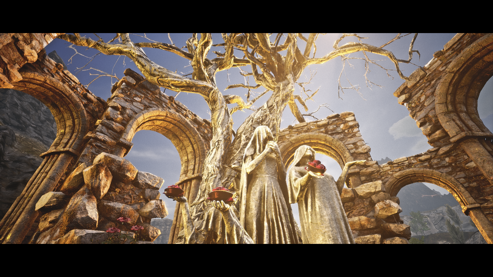
3 siglos después... La segunda era quedó marcada por las primeras guerras. Lo que antes fueron alianzas débiles entre tribus comenzó a resquebrajarse. Los Elfos Primales, viendo crecer a los Humanos y Shazari, decidieron imponer su supremacía mediante la fuerza.
Los Shazari demostraron ser formidables combatientes. Los humanos sorprendieron por su capacidad de innovación: inventaron nuevas armas y lo que parecían fortificaciones móviles. Fue durante esta era que los primeros mestizos surgieron, rechazados por ambos bandos.
Los Malvakari junto a los Thaetirs comenzaron a organizarse. Aunque nadie sabía exactamente de dónde venían, su dominio sobre el Thae los convertía en piezas codiciadas para cualquier ejército. Sin embargo, los Malvakari preferían mantenerse como mercenarios, ofreciendo sus servicios al mejor postor.
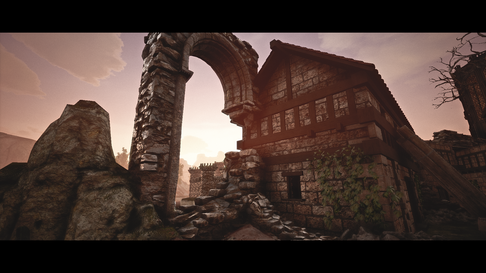
2 siglos después... La tercera era estalló con una gran guerra, ya no entre tribus, sino entre civilizaciones. Los Elfos Primales convocaron a todas sus fuerzas, incluso a los Oscuros, a quienes prometieron libertad a cambio de lealtad. Sin embargo, los Oscuros tenían sus propios planes.
Los humanos formaron un gran pacto con los enanos del norte y los Shazari, creando una coalición sin precedentes. Los Ossalyth lanzaron ofensivas navales que incendiaron puertos y devastaron las costas. Los Malvakari jugaron un papel oscuro: algunos se aliaron a los rebeldes, otros vendieron su poder a los elfos.
Al final de esta era, no hubo vencedores claros, solo sobrevivientes.
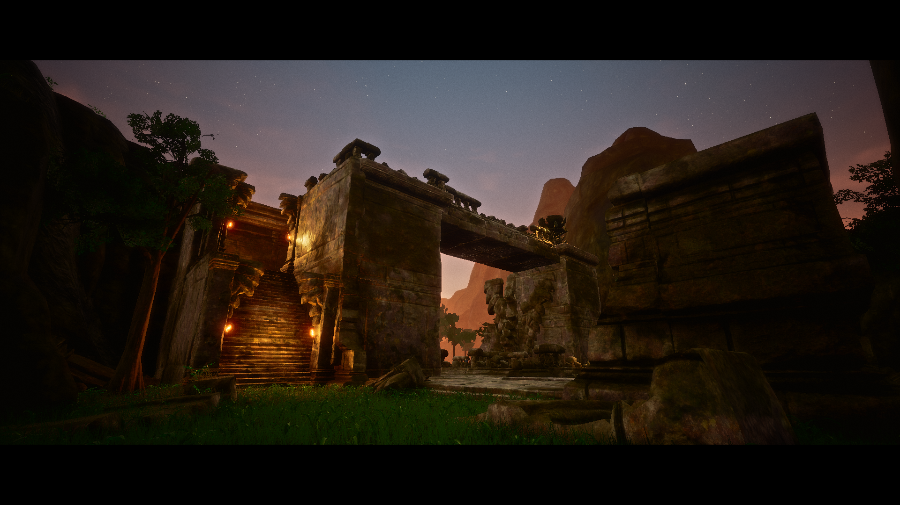
Tras generaciones de guerra, las tierras estaban divididas en cientos de pequeños feudos, ciudades amuralladas y fortalezas aisladas. El Thae había dejado cicatrices imborrables en la tierra: zonas de energía corrupta, bestias deformadas, regiones donde las estaciones no siguen su curso natural.
En medio del caos, surgieron figuras legendarias. Entre los elfos, la Casa Blackwood empezó a destacarse por su habilidad para unir facciones enemigas. Los Shazari prosperaron como comerciantes, mercenarios y espías. Los Malvakari comenzaron a establecer sus propios enclaves.
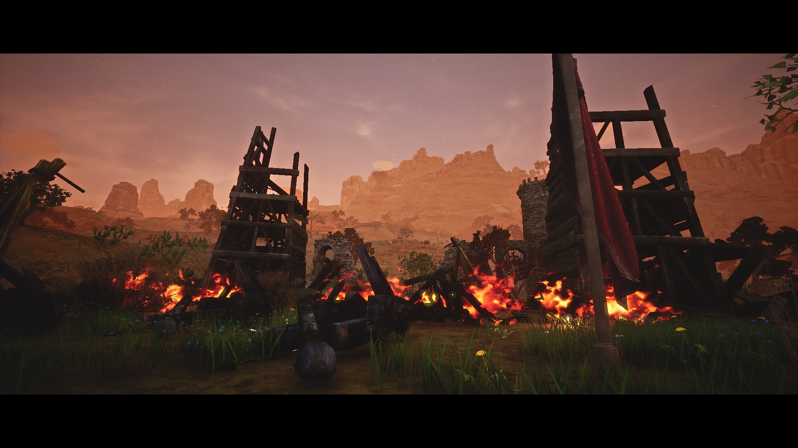
2 siglos después... La quinta era fue llamada la Era de las Unificaciones. Los siglos de conflicto habían agotado a todos, y las grandes casas comenzaron a buscar algo que antes parecía imposible: la paz. Bajo el liderazgo de los elfos Primales de la Casa Blackwood, se firmaron los primeros tratados de unión.
Así nacieron tres grandes ciudades: Raventree Hall, construida en la Isla de Mármol como capital del nuevo orden; Ravensvik, en las heladas tierras del norte; y Ash'Torin, en el sur, un crisol de culturas.
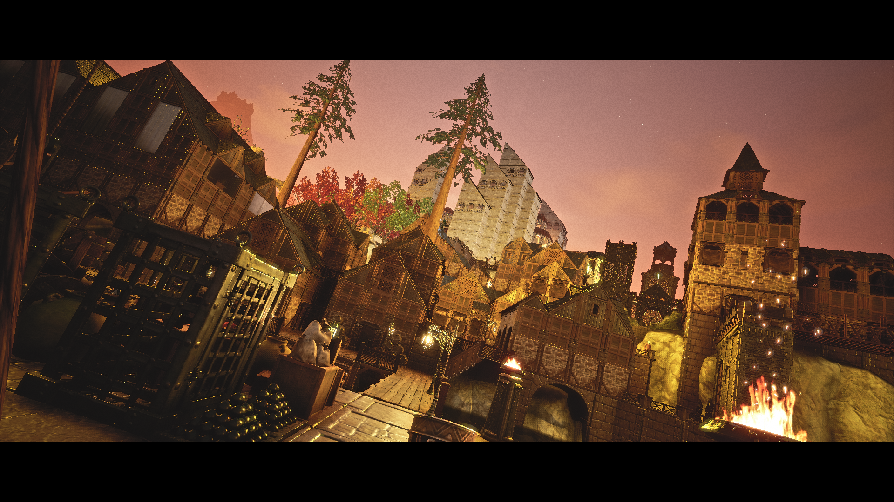
Construida sobre las costas de la Isla de Mármol, Raventree Hall es el símbolo del equilibrio alcanzado tras siglos de guerras. Sus torres blancas emergen de los riscos y sus puentes suspendidos están cubiertos de vidrieras que narran la historia del mundo. Gobernada por la Casa Blackwood de linaje Primal.
Ubicada en la región desértica del sur, Ash'Torin es una ciudad tallada por la resistencia y la astucia. A orillas del mar y abrazada por dunas doradas, fue fundada por los Ossalyth y los Malvakari. Hoy bajo el gobierno de la Casa Thalcarion, leal a Raventree Hall.
En el extremo norte del continente, donde el mar helado golpea con furia, se alza Ravensvik sobre islas altas conectadas por puentes colgantes. Sus habitantes viven bajo una lógica simple: si no puedes resistir el frío, la bestia o la locura, no perteneces allí.
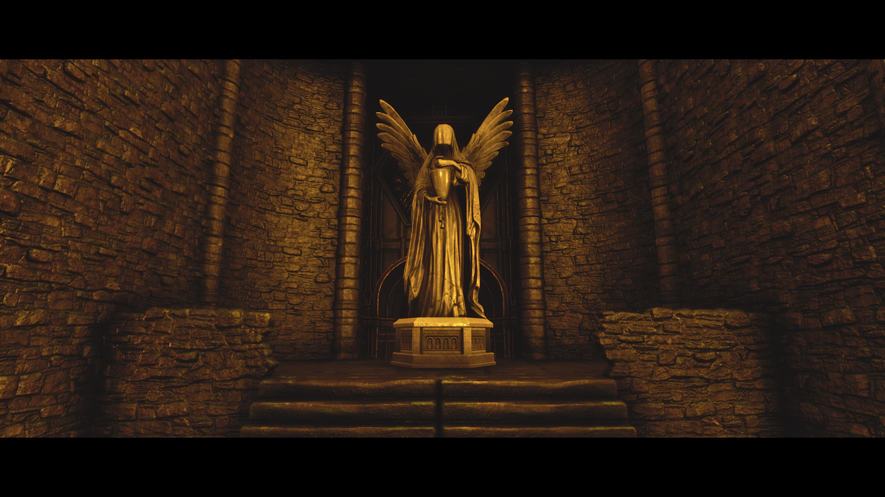
Eselia es una deidad de la luz pura, la revelación interior y la sabiduría silenciosa, representada como una figura femenina etérea de ojos dorados, cuyo resplandor guía sin imponer. No busca adoración, sino despertar, y su culto se basa en la introspección, la compasión y el orden. Sus símbolos, como un sol con un ojo central o una vela sobre un lago, evocan su esencia serena. Se manifiesta en presencias sutiles: una niebla dorada, un rayo de sol, una voz en sueños. Sus fieles practican actos de bondad anónimos. Según el mito fundacional, fue ella quien inspiró a Tempus en una cueva durante una tormenta.
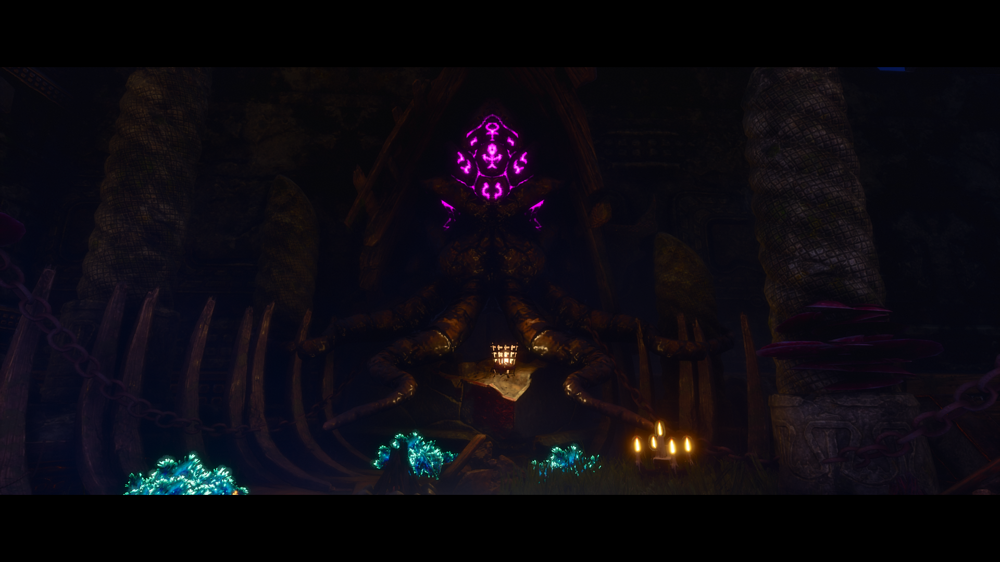
Nazhur es una deidad del mar profundo, los secretos sumergidos y las tormentas del sur. Representa el ciclo de abundancia y pérdida. Su figura colosal de piel azul verdosa, ojos morados brillantes y túnicas que fluyen como corrientes inspira tanto temor como reverencia. Sus fieles, los Hijos del Oasis Hundido, practican rituales de inmersión nocturna en busca de visiones. Se dice que el agua en movimiento es bendita, mientras que el agua estancada es una ofensa. Según un antiguo mito, cuando el Primer Imperio intentó someter el mar, Nazhur desató una ola negra que arrasó cinco ciudades costeras.
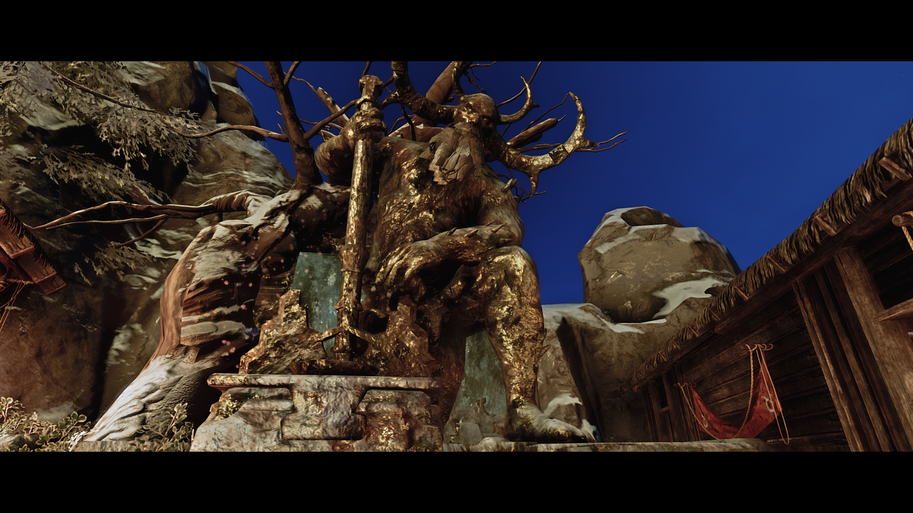
Vorgrimm es una deidad ancestral venerada y temida en las frías tierras del Norte, donde representa tanto el fin como el renacimiento. Su figura es la de un coloso cubierto de pieles y huesos, con cuernos de alce, una máscara de hielo negro y relámpagos azules por venas. Sus símbolos —una espiral rota con un ojo sangrante— se graban en huesos o escudos. Sus seguidores realizan rituales que incluyen sacrificios, rupturas de juramentos y guerras tribales. Vorgrimm se manifiesta como un gigante furioso, un anciano intrigante o una aurora boreal sangrante.
Zenhra es la diosa de la naturaleza, la fertilidad y la libertad. Se manifiesta como una mujer de piel terrosa, con cabello de raíces y musgo en los brazos, aunque también adopta formas animales o vegetales. No tiene templos ni tronos: es un santuario viviente. Sus seguidores, sabios nómadas, creen que la vida no debe encerrarse ni regularse, y que todo nacimiento lleva en sí la semilla de la muerte y el renacimiento. Zenhra no habla con palabras: su presencia se siente en el brote tras un incendio o el rugido protector de una madre salvaje.
"Versátiles, ambiciosos y de vida corta, los humanos fueron los últimos en civilizarse según los relatos más antiguos. Durante generaciones, se dice que estuvieron bajo el yugo de los orgullosos Primales, llegando incluso a ser esclavizados por los elfos. Pero cuando despertaron, lo hicieron con una fuerza arrolladora. Su adaptación fue veloz, su curiosidad insaciable y su sed de conquista imparable."
Los humanos están presentes en casi todo el mundo conocido. Se agrupan en pueblos, ciudades y culturas que varían enormemente según el territorio.
Adaptables, innovadores y empujados por una curiosidad insaciable. Fundaron aldeas, ciudades, naciones y se lanzaron a explorar lo desconocido, escribiendo su historia a base de lucha, ingenio y supervivencia. Con el tiempo, formaron un gran pacto con los enanos del norte y los shazari, una coalición que cambió el curso del continente.
"Eran antiguos cuando el mundo aún susurraba en voz baja. Eran sabios cuando el resto apenas caminaba. Y fueron orgullosos… incluso cuando su orgullo casi los destruye. Elegantes, longevos y profundamente conectados con la magia y la naturaleza, los elfos son una de las razas más antiguas de Primus."
Los elfos destacan por su gracia, longevidad y afinidad natural con el Thae. Aunque comparten raíces comunes, las distintas ramas de su linaje han desarrollado culturas muy diferenciadas.
De sangre pura, tomaron el mando absoluto durante la primera era. Gobernaron sobre tribus y clanes, fundando la primera gran civilización elfica.
Dedicados a la caza, la exploración y el resguardo de los bosques. Establecieron contactos diplomáticos con clanes Shazari separados de los Primales.
Relegados a la casta más baja, convertidos en sirvientes. Con el surgimiento de los mestizos, comenzaron una rebelión interna que debilitó la estructura élfica.
"Los enanos son una raza robusta y tenaz, reconocida por ser los primeros en conquistar las entrañas del mundo. Sus ancestrales fortalezas, excavadas en las montañas del norte, son refugio de hornos ardientes, minas de oro y vastas cámaras de piedra. Su amor por la artesanía, la guerra y la tradición los convierte en aliados poderosos y enemigos formidables."
Habitan en fortalezas y ciudades subterráneas enclavadas en las montañas del norte. Sus dominios se extienden a minas y caminos tallados en la roca, inaccesibles para la mayoría.
Reservados pero con un sentido del honor firme, y nunca olvidan una traición. Se volvieron ricos e ingeniosos, reconocidos por su talento en la forja y la construcción. En materia de diplomacia forjaron alianzas sólidas con grupos humanos, Shazari y Thae'tirs.
"Los Shazari son una raza felina de origen tribal que desciende de lo que muchos consideran la primera creación viva. Con cuerpos ágiles, sentidos agudos y una vida marcada por el instinto, los rituales y el honor, fueron durante siglos vistos como salvajes por otras civilizaciones."
Su sociedad, estructurada en clanes gobernados por los más fuertes o sabios, se mantuvo alejada hasta que los primeros contactos diplomáticos revelaron una cultura profunda. Con el tiempo demostraron ser no solo feroces guerreros, sino también hábiles comerciantes y diplomáticos astutos.
Viven mayormente en selvas, sabanas y valles húmedos, aunque algunos clanes se han asentado cerca de rutas comerciales o enclaves mixtos. La gran mayoría partió a los asentamientos del norte.
"Los Ossalyth son una raza ancestral surgida de las profundidades marinas. De piel escamosa, ojos acuáticos y respiración dual, fueron durante siglos una civilización neutral que construyó puertos y aldeas costeras donde reinaban la calma, la sabiduría y el intercambio."
Habitan en zonas costeras, arrecifes ocultos o ruinas sumergidas, donde su presencia ha moldeado el paisaje cultural de las regiones. También se los puede encontrar como intermediarios diplomáticos en enclaves portuarios.
Se comunican mediante un lenguaje común, pero también a través de cantos armónicos que vibran como ecos místicos en el agua. Aunque su aspecto es inusual para los terrestres, su temple es noble y su espiritualidad profunda.
"Poca información se tiene sobre los Malvakari, pues provienen de otra dimensión o plano desconocido. Algunos cuentan que compartían su mundo natal con los Thae'tirs, un lugar próspero y sin guerras aparentes. Sin embargo, recuerdan que un día 'el cielo ardió' y fueron transportados a esta dimensión, sin saber exactamente cómo ni por qué."
Su civilización y asentamientos en este mundo son poco conocidos, pues muchos Malvakari llevan vida nómada o mercenaria, ligados a conflictos y economías de guerra.
Desconfiados con facilidad por otras razas, comenzaron a establecer sus propios enclaves. Algunos pactaron con los Blackwood, vislumbrando la posibilidad de un futuro compartido. En las guerras jugaron un papel oscuro: algunos se aliaron a los rebeldes, otros vendieron su poder al mejor postor.
"Los Thae'tirs, también conocidos como Hijos del Thae, comparten poco sobre su historia. Al igual que los Malvakari, provienen de una dimensión ancestral. Su pueblo era sumamente visionario, capaces de leer los signos en las estrellas. Dicen que cada vez que uno de los suyos nacía, una nueva constelación aparecía en el cielo."
Dispersos por el mundo: en el norte junto a los enanos, en la capital como consejeros, o en el sur explorando territorios desconocidos.
Su civilización, organizada como una antigua república, fue una de las más longevas conocidas. Hoy, debido a su inteligencia y sabiduría, los Thae'tirs se han dispersado por distintas regiones. A pesar de su dispersión, mantienen relaciones cordiales con todas las razas.
"Los mestizos nacieron de la mezcla entre distintos linajes élficos o entre elfos y humanos. Estas uniones no eran vistas con buenos ojos. Aunque su existencia no es tan antigua como los primeros contactos entre razas, los mestizos siempre han sido una minoría marginada y estigmatizada."
Los mestizos no tienen un territorio propio reconocido oficialmente. Pueden encontrarse dispersos por todo el mundo, especialmente en zonas fronterizas, ciudades comerciales o aldeas apartadas. También existen comunidades ocultas en exilio voluntario.
Considerados una ruptura del orden natural, fueron rechazados tanto por las sociedades élficas más conservadoras como por los humanos de pensamiento tradicional. Aun así, muchos sobrevivieron como comerciantes, artistas, mercenarios o espías. Con el tiempo, los mestizos dejaron de ser simplemente una mezcla de razas para convertirse en un pueblo por derecho propio: diverso, adaptable y resistente.
"Versado en los misterios del cuerpo y del alma, el galeno es un sanador que combina el saber de la medicina natural, lo espiritual y, en muchos casos, la magia. Ya sea en aldeas humildes o cortes reales, cumple el rol de curandero, herbolario y consejero, aplicando sus conocimientos para aliviar dolores, purificar maldiciones o guiar en tiempos de crisis."
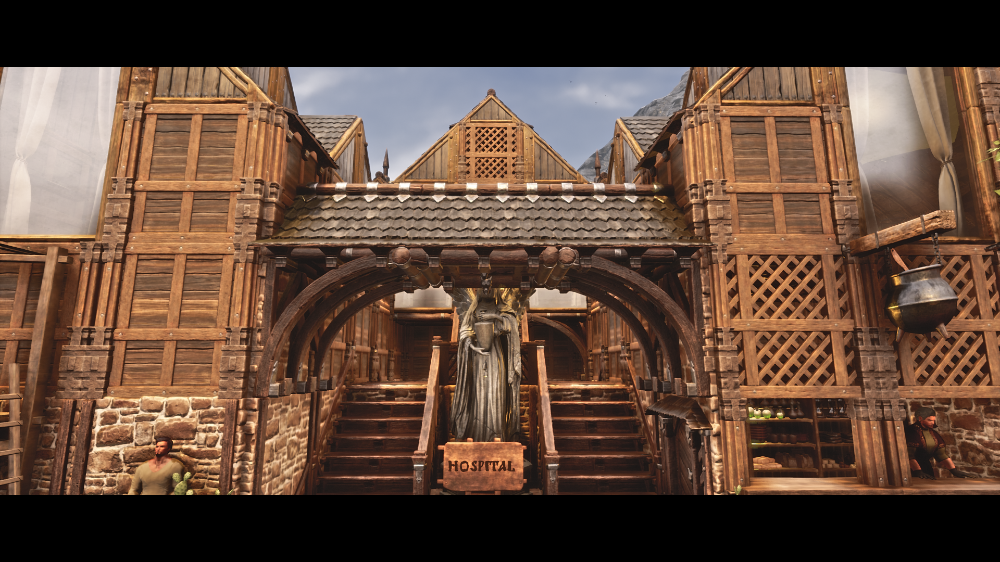
Los galenos novatos acaban de empezar a recorrer el camino de la sanación. Son capaces de limpiar y curar heridas leves, como arañazos, magulladuras y algunos cortes algo más profundos. Con un poco de esfuerzo pueden hacer suturas burdas que cumplen con su función. Tienen leves conocimientos sobre los efectos de algunos venenos y sus antídotos, por lo que suelen acudir a los alquimistas más experimentados. También tienen conocimiento sobre vendajes y primeros auxilios.
Con experiencia acumulada, puede tratar heridas medias, fracturas simples y dislocaciones. Sus conocimientos de herboristería y alquimia básica le permiten elaborar antídotos y ungüentos curativos. Puede asistir en intervenciones quirúrgicas menores y colaborar con otros galenos en casos difíciles.
Los maestros galenos pueden tratar heridas graves, órganos comprometidos y envenenamientos críticos. Pueden estabilizar personajes en estado de Heridas Tier 4. Su reputación les abre puertas en cortes, gobiernos y órdenes religiosas, siendo considerados pilares de cualquier comunidad.
"La herrería es el arte de moldear el metal desde la mena extraída de la mina, hasta el lingote transportado a las fraguas, llegando a la forja de armas, armaduras, herraduras y un sinfín de utensilios. Aquellos que ejercen la herrería nunca tienen falta de trabajo: a ellos acuden tanto soldados como campesinos, tanto artistas como sanadores."
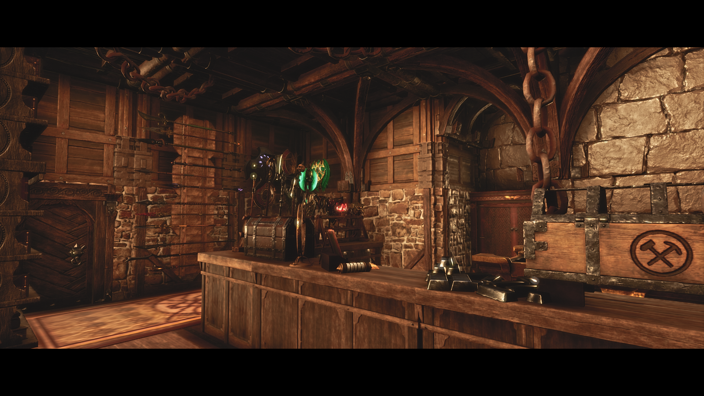
A lo igual que los otros oficios, la herrería es un camino que al comienzo puede ser difícil, agotador e incluso frustrante, ya que el mínimo fallo en la fuerza a la hora de martillar y moldear, en el tiempo que expones la barra al fuego o el golpe al cambio de temperatura puede hacerte fallar. Quizás encuentres distintos maestros herreros y cada uno tenga una forma especial a la hora de enseñarte, pero todos parten desde el mismo mineral: el Kronyxium.
Con dominio de las aleaciones y las técnicas avanzadas de templado, puede forjar armas de mayor calidad, armaduras especializadas y herramientas de precisión. Sus piezas empiezan a contar con propiedades únicas nacidas de la técnica perfeccionada. Los clientes vienen desde lejos buscando su trabajo.
Los maestros herreros son capaces de crear equipamiento legendario cuya calidad va más allá de lo puramente funcional. Sus obras son codiciadas por reyes, comandantes y héroes por igual. Un arma forjada por su mano es un símbolo de prestigio y poder que trasciende generaciones.
“El minero es un experto en adentrarse en las entrañas de la tierra, donde busca metales preciosos, gemas y cristales imbuidos de magia. Con pico en mano y linterna al cinto, explora minas, cavernas y ruinas olvidadas, siempre en busca de los tesoros ocultos bajo la roca y el silencio del subsuelo.”
Con un pico en las manos y una linterna temblorosa, entra a la mina por primera vez con el corazón latiendo fuerte. Pica sin técnica, pero con fuerza. Saca carbón, hierro pobre y algunas piedras preciosas básicas. Aprende a temer los derrumbes, a confiar en el eco de las cavernas y a no subestimar la oscuridad.
Domina las técnicas de extracción y conoce las vetas más ricas. Se aventura en zonas más profundas donde se encuentran minerales raros y cristales con propiedades arcanas básicas. Sus herramientas son más eficientes y su instinto bajo tierra, infalible.
Cartografiá rutas subterráneas olvidadas y se adentra donde otros no se atreven. Extrae minerales legendarios, gemas imbuidas de magia y materiales que solo existen en las profundidades más peligrosas. Su conocimiento del subsuelo es enciclopédico.
“Más que un simple servidor de mesas, el tabernero es el alma de la comunidad, custodio de historias, secretos y copas bien servidas. En su taberna convergen viajeros, mercaderes y aventureros. Ofrece comida caliente, refugio y bebida, pero también escucha rumores, media disputas y, cuando conviene, comercia con información tan valiosa como el oro.”
Comienza limpiando mesas y aprendiendo el nombre de las bebidas, pero escucha más de lo que parece. Ve al ebrio que no paga, al viajero con secretos y al noble disfrazado. Sirve con torpeza, pero su sonrisa es honesta. Aprende rápido.
Con rodaje y sazón propios, crea preparaciones especiales y recetas únicas. Sus clientes regresan porque nadie más sirve como él. Conoce los rumores de la ciudad y sabe usar esa información con discrección.
Su establecimiento es leyenda. Los brebajes que prepara tienen fama en toda la región: algunos curan, otros simplemente saben a algo que nunca antes probaste. Conoce el secreto de cada viajero que ha pasado por sus puertas.
“Experto en el arte de transformar gemas y metales nobles en auténticas obras maestras, el joyero es tanto un artesano como un custodio de la belleza y el poder. Sus creaciones van desde anillos y coronas hasta amuletos cargados de magia. En muchas culturas, su oficio está estrechamente ligado a lo arcano.”
Inicia con paciencia, lija en mano y la mirada fija en pequeños destellos. Trabaja en una mesa iluminada, ajustando engastes y limpiando metales. No conoce el valor de lo que toca, pero sí su belleza. Su trabajo embellece, aunque aún no deslumbra.
Trabaja con gemas semipreciosas y metales nobles con habilidad creciente. Sus piezas tienen equilibrio entre forma y función. Puede incorporar encantamientos básicos y empieza a recibir encargos de clientes de renombre.
Sus manos hábiles no solo tallan la materia, sino que preparan el canal para encantamientos y rituales antiguos. Crea artefactos únicos codiciados por nobles, magos y coleccionistas. Una joya suya es más que adorno: es poder.
“Maestro de la carpintería e ingeniería, transforma la materia en utilidad o belleza. Construye desde instrumentos y muebles hasta estatuas, carrozas o mecanismos mágicos. Trabaja con madera, piedra, cerámica y metales blandos. Colabora con magos o alquimistas para crear reliquias encantadas y mecanismos complejos.”
El aprendiz se familiariza con la madera, el metal y la piedra. Su taller es modesto y su trabajo se limita a reparaciones sencillas o pequeñas creaciones útiles: bancos, cucharas o herramientas básicas. Observa más de lo que actúa, pero en su mirada hay hambre por dominar el oficio.
Construye muebles elaborados, herramientas de precisión y objetos decorativos para hogares y negocios. Su trabajo requiere y recibe encargos más complejos. Empieza a colaborar con otros oficios para proyectos mayores.
Sus obras son consideradas arte. Estatuas, carrozas, mecanismos y reliquias coleccionables. Colabora con magos y alquimistas para crear objetos encantados de alto valor. Su nombre circula entre nobles y clérigos que pagan bien por su trabajo.
“El granjero es la base sólida que sostiene aldeas y ciudades, dedicándose con paciencia y esfuerzo al cultivo de tierras, la cosecha de alimentos y la cría de animales. Su trabajo produce no solo el sustento necesario para alimentar al reino, sino también hierbas medicinales y materias primas para textiles.”
Comienza arando la tierra con manos callosas y espalda encorvada. Aprende cuándo sembrar y cuándo regar, cómo cuidar a las gallinas y cuántas veces hay que voltear el estiércol. Es la base de todo lo que se come, aunque rara vez recibe agradecimientos. Pero sin él, el resto no vive.
Cultiva hierbas medicinales y especias de mayor valor. Gestiona granjas más complejas y diversificadas con distintas cosechas por temporada. Sus conocimientos sobre el ciclo natural le permiten maximizar la producción.
Domina los ciclos naturales y los secretos de la tierra. Cultiva plantas exóticas y cría criaturas poco comunes. Su granja es autosuficiente y abastece a comunidades enteras. Es pilar indispensable de la economía y la comunidad.
“Estos hombres y mujeres son los guardianes juramentados de las ciudades, aldeas, fortalezas y senderos que cruzan el reino. Su presencia impone orden y seguridad en tiempos de paz, y su espada es la primera en alzarse cuando el conflicto se cierne sobre la tierra.”
Lleva una armadura que aún le queda algo suelta, pero marcha con el orgullo de quien jura proteger algo mayor que sí mismo. Patrulla calles tranquilas, vigila puertas y aprende a no reaccionar con miedo al primer grito. Cumple órdenes con diligencia, aunque todavía depende de sus superiores para cada decisión.
Con años de patrulla y escaramuzas, ya no necesita que le digan qué hacer. Lidera pequeños grupos, interroga sospechosos y mantiene el orden con firmeza. Su instinto lo alerta antes de que el peligro se vea venir.
Defensor temido y respetado. Manda pelotones, ejecuta misiones especiales y es referente de honor y disciplina marcial. Algunos sirven como guardia personal de nobles, otros encabezan órdenes militares. Su sola presencia disuade.
"El alquimista es un artista del fuego y la transmutación. Combina ingredientes arcanos para crear pociones, venenos, explosivos y elixires que desafían las leyes naturales. Su laboratorio es su fortaleza."
Comienza su camino experimentando con hierbas y minerales básicos. Aunque a veces sus mezclas pueden ser inestables, sus pociones simples ya son útiles para la vida diaria y pequeñas contiendas en Primus.
Domina técnicas avanzadas de destilación y mezcla, lo que le permite crear pociones con efectos más potentes y venenos capaces de alterar el curso de una batalla.
Sus conocimientos trascienden lo ordinario, rozando lo mágico y lo prohibido. Es capaz de elaborar elixires legendarios y transmutaciones de incalculable valor.
"El sastre da identidad a quienes visten sus creaciones. Desde uniformes militares hasta vestidos de corte, pasando por capas de aventurero, su aguja y su hilo tejen más que tela: tejen historia."
Comienza aprendiendo a medir, cortar y coser telas comunes. Sus creaciones, aunque sencillas, son esenciales para vestir a quienes inician su aventura en este arduo continente.
Sus manos trabajan ahora curtidos y telas resistentes, confeccionando armaduras ligeras de cuero que protegen a exploradores y pícaros sin sacrificar su movilidad.
Sus creaciones son demandadas no solo por su resistencia, sino por su exquisitez. Trabaja hilos de inmensurable valor, entretejiendo protecciones encantadas y armaduras de leyenda.
“Guardián silencioso de los bosques y sus secretos, el cazador es un experto rastreador que provee carne, pieles y huesos para la comunidad. Con habilidad y paciencia, caza bestias salvajes y criaturas mágicas, abasteciendo a herreros, alquimistas y artesanos con materiales únicos extraídos del entorno natural.”
Camina descalzo en la hierba húmeda y reconoce huellas que otros pisan sin notar. Caza con trampas simples y arco corto. Sus presas son conejos, ardillas y aves. No busca gloria, busca supervivencia. A menudo es más silencioso que el bosque mismo, y conoce qué hierba sana... y cuál mata.
Caza presas mayores: ciervos, jabaliîs y criaturas más peligrosas. Diseña trampas elaboradas y conoce los venenos de la fauna local. Aprovecha cada parte de su presa y abastece a herreros, alquimistas y artesanos con materiales únicos.
Rastrea criaturas mágicas y bestias legendarias en lugares donde otros no se atreven a entrar. Es fantasma en el bosque y sombra en la noche. Su conexión con la naturaleza lo convierte en un depredador sin igual y en el compañero más valioso de cualquier expedición.
¡Bienvenido/a a nuestra comunidad! Este espacio ha sido creado para disfrutar juntos del servidor, compartir historias, vivir aventuras y, sobre todo, pasarla bien en un entorno respetuoso y colaborativo. Para que eso sea posible, te pedimos que tengas en cuenta lo siguiente:
Para mantener una experiencia de rol inmersiva, coherente y respetuosa para todos, te pedimos que leas y sigas estas normas cuando estés interpretando a tu personaje:
Heridas menores que pueden sanar por sí solas.
Heridas que requieren atención básica.
Comprometen tu salud seriamente.
Heridas que ponen en riesgo inmediato tu vida.
Construir con sentido común también es parte del rol. Para mantener el servidor equilibrado, evitar sobrecargas innecesarias y permitir que todos los jugadores puedan disfrutar y desarrollarse en sus espacios, se establecen las siguientes normas de construcción. No buscamos limitar tu creatividad, sino fomentar un entorno más justo, ordenado y funcional para toda la comunidad.
Construir es parte del rol, y hacerlo con responsabilidad suma a la experiencia de todos. Gracias por respetar estas indicaciones y aportar al desarrollo del mundo que compartimos.
"Todo acto tiene una consecuencia. Prepárate, lanza los dados y enfréntate al destino."
Al comenzar un combate, cada personaje deberá usar la habilidad de Iniciativa. El orden de actuación irá del resultado más alto al más bajo.
Cada turno en combate se divide en tres fases que deben seguirse en orden:
La esclavitud forma parte del mundo y su historia, pero todo debe jugarse con respeto y cuidado. Recuerden que son personajes y que la experiencia de todos importa.
Recordemos que el respeto y la diversión van primero. Si tienes dudas o quieres hablar algo, el staff está para ayudar.
El robo forma parte del entorno de rol, pero debe realizarse de forma coherente, justificada, con interpretación sólida y respetando los sistemas del servidor. No está permitido robar a motor bajo ninguna circunstancia. Si ves un cofre o puerta abierta, no puedes tomar objetos sin rol.
Se usará la habilidad de robo, la cual tendrá un CD de 6 horas, donde se enfrentará Juego de Manos vs Percepción.
Ante el intento de robo en el exterior, el ladrón podrá decidir si abrir un conflicto de PVP o tirar de la habilidad. Si gana el combate PVP podrá robar 1 ítem de Redux o entre 1 y 10 monedas de plata.
Las mazmorras son espacios cargados de misterio, tesoros, desafíos y muerte. Ya sean ruinas olvidadas, laboratorios corruptos o fortalezas malditas, estas pruebas pondrán a los aventureros al límite. Para enfrentarlas, se han establecido tres modalidades oficiales:
Además, cada dungeon cuenta con un rango de dificultad, desde retos simples hasta desafíos legendarios donde pocos sobreviven para contar la historia.
Las dungeons están clasificadas por letras, representando el nivel de peligro y la preparación necesaria.
Este modo está diseñado para el combate libre, sin necesidad de dados, basado en el motor y trabajo en equipo.
Este modo utiliza el sistema de combate narrativo por dados.
La construcción de viviendas dentro de la ciudad sigue estrictamente la Normativa de Construcción Urbana, la cual busca mantener coherencia estética y funcional dentro de cada distrito o zona.
Los clanes o grupos que deseen asentarse fuera de la capital pueden hacerlo mediante el siguiente proceso:
Puede obtenerse a través de: compra de esclavos (1 oro por cada unidad de entorno, máximo 5). Solo servirán de entorno, los ToT Basic.
No pueden matar, oír conversaciones ni avisar presencia de jugadores enemigos en ausencia del clan.
El entorno debe ser roleado de manera narrativa y equilibrada, evitando su uso como "guardias automáticos". El rol de entorno siempre respetará a la guardia.
En caso de PVP dentro del territorio del asentamiento, el líder del clan recibe un turno adicional al final del combate (únicamente dentro de su zona reclamada y registrada).
Cualquier construcción fuera de la ciudad o asentamiento registrado sin autorización: